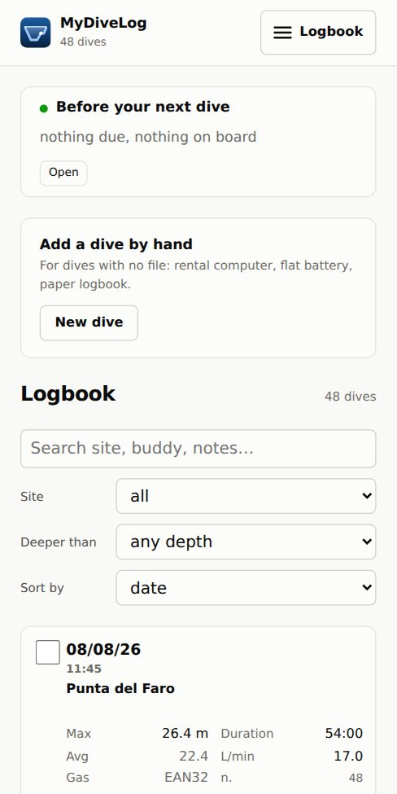

Import from your dive computers, analyse your profiles, plan your dives. Your logbook lives on your device — and stays there even if you never sign in.

MyDiveLog is a logbook for divers who want to understand what their data is telling them, not just store it. It reads the files other applications produce, downloads straight from your dive computer over Bluetooth, recognises the same dive arriving from two different sources, and merges them keeping the best of each.
UDDF, Shearwater (XML and the native log), Scubapro LogTRAK, Garmin FIT, Subsurface, CSV. The format is detected from the content, not from the file extension.
Shearwater and Scubapro/Uwatec, with a bookmark: the second time round it downloads only the new dives, not the whole memory.
Bühlmann ZH-L16C with gradient factors, sixteen compartments, oxygen exposure by local day, buoyancy oscillation and ascent rates — each figure carrying its own stated reliability.
Gas and decompression: multi-level, automatic switches at the MOD, CCR with setpoint and real diluent, bailout and contingencies. Consumption comes from your own dives, not from a textbook.
Statistics, trends and suggestions with the numbers underneath: how many ascents outside the limits, how many safety stops skipped, what repetitive dives actually cost you.
Full JSON backup, UDDF export, printable logbook and dive plan. The local archive is a SQLite file you can open with any tool.
Real screenshots, taken from the app with a sample logbook: nothing retouched, and nothing the program does not actually do.



If you use more than one device, you can keep your logbook aligned. You sign in with a Google account and the app creates a database that is yours alone: there is nothing to configure, and dives travel directly between the application and that database.
Signing in is optional, and syncing is never automatic. The logbook opens, imports and analyses without ever seeing an account, because the archive is on your device. And nothing leaves until you press Sync: a logbook gets read on a boat, where there is no network.
Every person gets a database physically separate from everyone else's — not a row in a shared table. The service that hands out the keys keeps no list of users and never sees your dives: it says who you are and gives you a key that lasts two hours. Details in Privacy.
MyDiveLog is free software under the MIT licence: the code can be read, copied and modified. It costs nothing, has no subscriptions, no advertising, and collects no usage statistics.
It currently runs on macOS and iPhone. There is no ready-made download yet: you build it from source, and the instructions are in the repository.
MyDiveLog is not a dive computer and must not be used to make decisions in the water. Its decompression calculations, plans and analyses exist to study the dives you have done and prepare the ones you are going to do: they do not replace your dive computer, your training or your judgement. Scuba diving carries risks, including death.